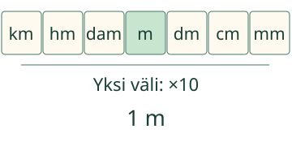
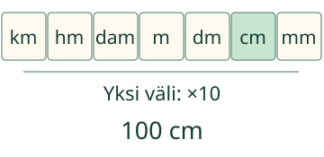
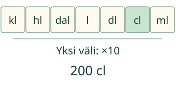

<link rel="stylesheet" href="lesson.css">
<section data-b12-unit>

<section data-teaching-step="1" data-lesson-role="teaching-step">
<div class="intro"><p>Loikka mittaa saman narun. <strong>Pienempi yksikkö, suurempi lukuarvo.</strong></p></div>
<div data-explore><button type="button" data-action="step">Yksi kymmenaskel</button></div>
<div data-model></div><p data-caption>1 m = 1 m. Sama määrä, lähtötilanne.</p>
</section>


<section data-teaching-step="2" data-lesson-role="teaching-step">
<details data-tools data-lesson-role="teaching-step"><summary>Toista tai vaihda suuretta</summary><button type="button" data-action="play">Toista vaiheet</button><button type="button" data-action="stop">Pysäytä</button><button type="button" data-action="model-reset">Mallin alkuun</button><label>Malli<select data-model-case><option value="length">1 m → cm</option><option value="kilometre">1 km → m</option><option value="mass">2 500 g → kg</option><option value="capacity">2 l → cl</option><option value="back">1 cm → m</option></select></label><p>Paikat ovat kymmenkertaisia yksikkösuhteita, eivät mittakaavassa oleva viivoitin. Ajastus ei kuvaa ajan kulumista tai fyysistä liikettä.</p></details>
</section>

<nav aria-label="Oppitunnin kohdat" data-lesson-role="metadata"><a href="#mitta-miksi">Miksi kymmenen?</a> · <a href="#mitta-kokeile">Kokeile</a> · <a href="#mitta-lopuksi">Lopuksi</a></nav>

<section id="mitta-miksi"><section data-teaching-step="3-1" data-lesson-role="teaching-step"><h2>Sama naru, eri lukuarvo</h2><p>Yhteen metriin mahtuu <strong>10 desimetriä</strong>. Yhteen desimetriin mahtuu <strong>10 senttimetriä</strong>. Siksi <strong>1 m = 10 dm = 100 cm</strong>. Naru ei pitene, vaikka lukuarvo kasvaa.</p></section>
<section data-teaching-step="3-2" data-lesson-role="question"><p data-lesson-role="question"><strong>Ennusta:</strong> tarvitaanko suurempaa vai pienempää lukuarvoa, kun sama pituus kerrotaan senttimetrien sijasta metreinä?</p><details data-lesson-role="answer"><summary>Katso perustelu</summary><p>Pienempää. Yksikkö metri on suurempi: 100 cm = 10 dm = 1 m. Jokainen askel suurempaan yksikköön jakaa lukuarvon kymmenellä.</p></details></section>
<section data-teaching-step="3-3" data-lesson-role="teaching-step"><h3>Kilometristä metriin on kolme askelta</h3><p><strong>km → hm → dam → m</strong>. Hehtometri hm ja dekametri dam ovat välissä, vaikka niitä käytetään arjessa harvemmin. Siksi <strong>1 km = 10 hm = 100 dam = 1 000 m</strong>. Listan km, m, cm ja mm näkyvien sanojen lukumäärä ei kerro kymmenaskelten määrää.</p></section>
<section data-teaching-step="3-4" data-lesson-role="teaching-step"><h3>Etuliite kertoo yksikön koon</h3><p>Kilo tarkoittaa tuhatkertaista, desi kymmenesosaa, sentti sadasosaa ja milli tuhannesosaa vertailuyksiköstä. <strong>1 mm = 1/1 000 m = 0,001 m</strong>. Voit aluksi käyttää sanoja tai murtolukua; desimaalimuoto näytetään rinnalla.</p><p>Yksi iso yksikkö koostuu monesta pienestä yksiköstä. <strong>1 kg = 1 000 g</strong> ja <strong>1 l = 10 dl = 100 cl = 1 000 ml</strong>. Samaa kymmenrakennetta sovelletaan eri suureisiin, mutta <strong>pituutta ei muuteta massaksi</strong>.</p></section>
<section data-teaching-step="3-5" data-lesson-role="teaching-step"><h3>Toinen esimerkki: mehu ei lisäänny</h3><p>Kannussa on 2 litraa. Kun määrä ilmoitetaan desilitroina, se on 20 dl. Senttilitroina määrä on 200 cl. <strong>2 l = 20 dl = 200 cl</strong>. Eri yksiköiden nimet eivät tarkoita eri määriä.</p><details data-lesson-role="teaching-step"><summary>Entä tunnit?</summary><p><strong>1 h = 60 min</strong>, ei 10 eikä 100 minuuttia. Tunti ja minuutti eivät ole tämän etuliiterappusen peräkkäisiä kymmenyksiköitä. Tätä sääntöä ei siis käytetä jokaiseen mittayksikköön.</p></details></section></section>


<section data-teaching-step="4" data-lesson-role="teaching-step">
<section id="mitta-kokeile"><h2>Pidä sama määrä</h2><label>Tehtävä<select data-task><option value="steps">Kaksi kymmenaskelta</option><option value="km">Kilometri</option><option value="prefix">Millin merkitys</option><option value="mass">Kilo ja gramma</option><option value="capacity">Litra ja desilitra</option><option value="transfer">Mehun määrä</option><option value="back">Takaisin metreihin</option><option value="zero">Nolla</option><option value="orderLength">Pituusyksiköiden järjestys</option><option value="orderMass">Massayksiköiden järjestys</option><option value="orderCapacity">Tilavuusyksiköiden järjestys</option></select></label><p data-question>1 m = □ cm. Kirjoita lukuarvo senttimetreinä.</p><div data-single><label><span data-answer-label>Lukuarvo</span><input data-answer inputmode="text" autocomplete="off" placeholder="esim. 10 tai 1/10"></label></div><div data-many hidden><label><span data-field-label>1.</span><select data-answer><option value="">Valitse</option><option value="km">km</option><option value="m">m</option><option value="dm">dm</option><option value="cm">cm</option><option value="mm">mm</option><option value="kg">kg</option><option value="g">g</option><option value="mg">mg</option><option value="l">l</option><option value="dl">dl</option><option value="cl">cl</option><option value="ml">ml</option></select></label><label><span data-field-label>2.</span><select data-answer><option value="">Valitse</option><option value="km">km</option><option value="m">m</option><option value="dm">dm</option><option value="cm">cm</option><option value="mm">mm</option><option value="kg">kg</option><option value="g">g</option><option value="mg">mg</option><option value="l">l</option><option value="dl">dl</option><option value="cl">cl</option><option value="ml">ml</option></select></label><label><span data-field-label>3.</span><select data-answer><option value="">Valitse</option><option value="km">km</option><option value="m">m</option><option value="dm">dm</option><option value="cm">cm</option><option value="mm">mm</option><option value="kg">kg</option><option value="g">g</option><option value="mg">mg</option><option value="l">l</option><option value="dl">dl</option><option value="cl">cl</option><option value="ml">ml</option></select></label><label><span data-field-label>4.</span><select data-answer><option value="">Valitse</option><option value="km">km</option><option value="m">m</option><option value="dm">dm</option><option value="cm">cm</option><option value="mm">mm</option><option value="kg">kg</option><option value="g">g</option><option value="mg">mg</option><option value="l">l</option><option value="dl">dl</option><option value="cl">cl</option><option value="ml">ml</option></select></label><label><span data-field-label>5.</span><select data-answer><option value="">Valitse</option><option value="km">km</option><option value="m">m</option><option value="dm">dm</option><option value="cm">cm</option><option value="mm">mm</option><option value="kg">kg</option><option value="g">g</option><option value="mg">mg</option><option value="l">l</option><option value="dl">dl</option><option value="cl">cl</option><option value="ml">ml</option></select></label></div><p>Kirjoita pyydetyn yksikön lukuarvo ilman yksikkömerkkiä. Tarkka desimaali pilkulla tai pisteellä ja samanarvoinen murtoluku käyvät. Järjestystehtävässä valitse vain annetut saman suureen yksiköt.</p><button type="button" data-action="check">Tarkista</button><p data-feedback data-result="neutral" aria-live="polite">Tarkista, kun olet valmis.</p><details data-lesson-role="hint"><summary>Tarvitsen vihjeen</summary><p>Onko uusi yksikkö suurempi vai pienempi? Laske täydet kymmenvälit. Pienempiä yksiköitä tarvitaan enemmän, suurempia vähemmän. km:n ja m:n välissä on kolme väliä. Milli on 1/1 000 vertailuyksiköstä.</p></details></section>
</section>


<section data-teaching-step="5" data-lesson-role="teaching-step">
<details data-lesson-role="teaching-step"><summary>Kokeile toiseen suuntaan</summary><p>Valitse malliksi 2 500 g → kg. Kolmen askeleen jälkeen saat <strong>2,5 kg</strong>, eli 2 kg ja 500 g. Toiseen suuntaan 2,5 kg on 2 500 g. Muuttuiko pussin massa vai vain sen ilmoitustapa?</p></details>
</section>

<details class="teacher" data-lesson-role="teacher-note"><summary>Opettajalle ja ilman ruutua</summary><p>Vuosiluokat 3–6. Ydinesitieto on M-PLACE-04. Lukujen kertominen ja jakaminen kymmenellä selitetään tässä yksikkömäärinä. Desimaaleja ja murtolukuja ei aseteta uudeksi kovaksi esitiedoksi: pienet osat näytetään myös sanoin, ja keskeiset harjoitukset voi tehdä kokonaisluvuilla.</p><p>Paperilla: aseta metrinauha suoraksi ja sovita siihen kymmenen yhtä pitkää desimetripalaa. Jaa yksi pala kymmeneen senttimetriin. Tarkista samalla nollasta alkava mittaus. Mehuastialla voi tutkia samaa määrää l- ja dl-asteikoilla. Ruutukuva ei todista käytännön mittaamisosaamista.</p><p>Taulun paikat ilmaisevat etuliitteitä kilo, hehto, deka, vertailuyksikkö, desi, sentti ja milli. Massataulussa vertailuna on gramma; SI:n massan perusyksikkö on kilogramma. Litra on SI:n kanssa käytettävä tilavuusyksikkö, ei kuutiometri. Tämä on lineaaristen yksikkösuhteiden tunti: pinta-ala- ja kuutioyksiköihin sekä aikaan ei siirretä samaa kerrointa sellaisenaan.</p><p>Mallissa on vain ilmoitetut viisi tapausta ja suureet m, g ja l. Tarkistin ei pyöristä. Vastaus voi olla enintään 128 merkkiä; desimaaliluvussa nollien poiston jälkeen korkeintaan 12 kokonais- ja 6 desimaalinumeroa. Murtoluvun nimittäjä ei saa olla nolla. Mallin syöttöarvot ovat 0–1 000 000; esimerkeissä käytetään pieniä määriä. Palaute ja vihje ovat paikallista harjoittelua, eivät todiste itsenäisestä tai säilyvästä hallinnasta. Henkilöhistoriaa ei tallenneta.</p></details>

<section data-teaching-step="6" data-lesson-role="teaching-step">
<p id="mitta-lopuksi" data-lesson-role="question"><strong>Lopuksi:</strong> miksi 1 km on 1 000 m, vaikka lyhyessä luettelossa kilometri ja metri voivat olla peräkkäin?</p>
</section>
<noscript data-lesson-role="metadata"><p>Ilman JavaScriptiä näet lähtötilanteen ja ratkaistut esimerkit. Käytä paperisia yksikkökortteja tai mittanauhaa. Toisto ja tarkistus tarvitsevat JavaScriptin.</p></noscript></section>
